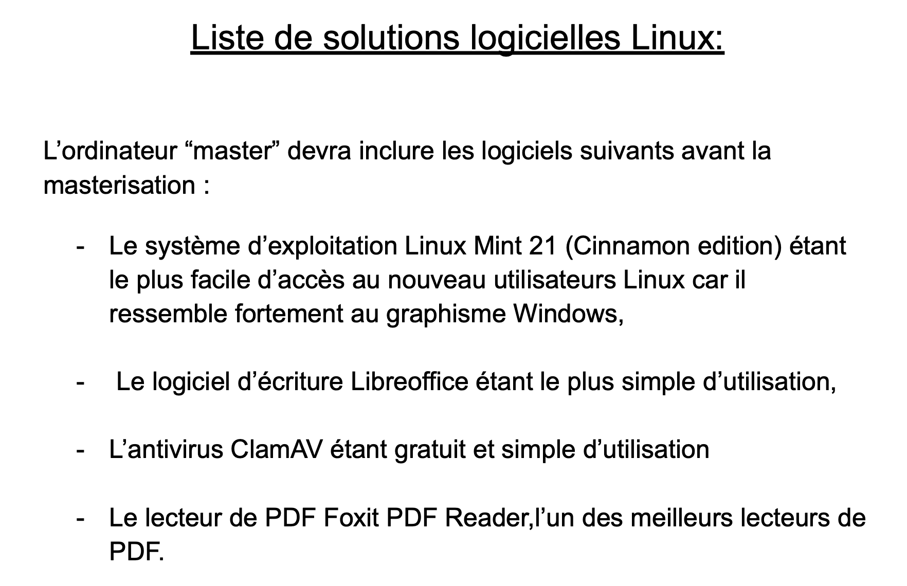
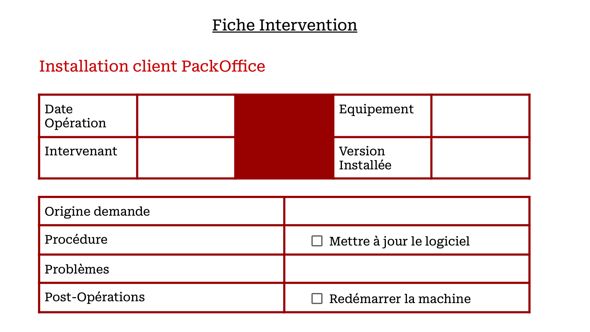
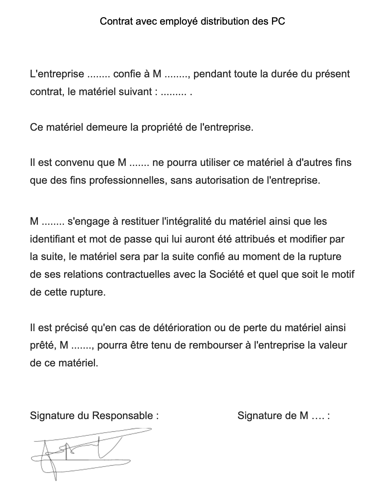
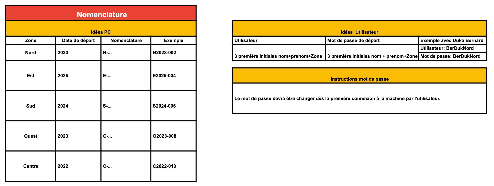
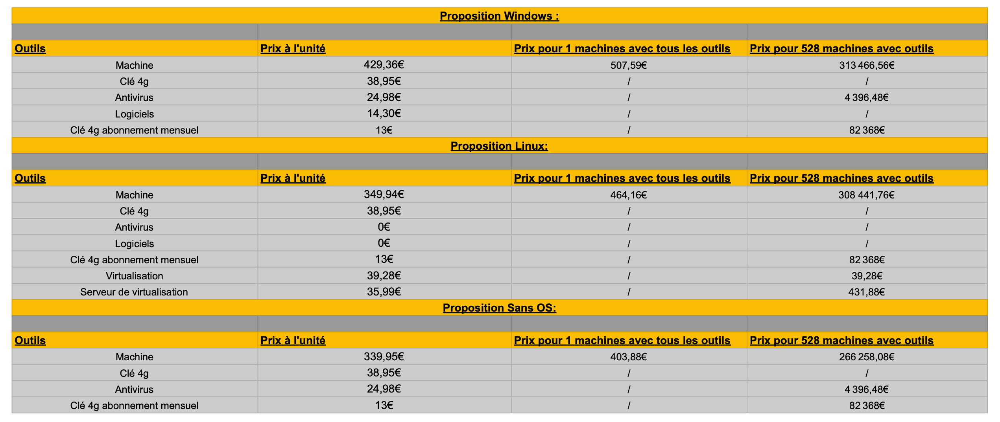

- Organiser la préparation des matèriels
- Organiser la récupération d’un équipement
- Définir les caractéristiques d’un équipement
- Définir un environnement logiciel
- Préconiser un environnement de masterisation
- Préparer des procédures
- Conseils de sécurisation
- Réaliser des fiches techniques
- Chef de Projet : Fernandes Hadrien (moi)
-
Goupe composé de : Fernandes Hadrien , Barck Nolan ,
Coisy Shauwn
-
Solutions proposés : Linux , Windows , Sans OS (Operating
System)
Solutions logicielles

Fiche Intervention

Contrat employé

Nomenclature

Prix par solution

- Travail en Equipe , apprendre à gérér un groupe de projet
- Chef de Projet
-
Sens du marketing , ne pas proposé des prix trop bas ou trop haut au
dépend de la qualité
- Réalisation de procédure , de contrat
- Préparer une présentation orale
- Répartir et organiser le travail au sein de l'équipe
×